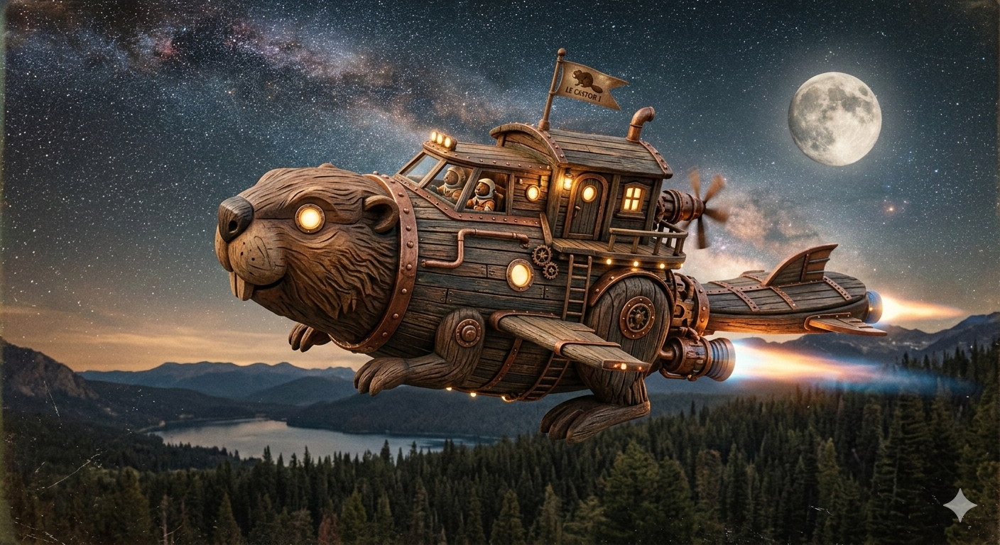

"Une livraison toujours à l'heure, même près des trous noirs."
— Major Grignote, Pilote de Cargo"J'ai dû larguer la cargaison légale pour faire de la place à ce segfault Fatal. Aucun regret."
— [SIGNAL BROUILLE]Le café qui booste tes neuronnes et ton code !
Découvrez nos produits !Après le crash du vaisseau Beaver-One, l'équipage a pris le contrôle du Barrage n°42. notre équipage a transformé cette station hydraulique en un havre de paix. Nous utilisons la pureté de l'eau du secteur pour vous offrir une expérience caféinée unique, entre tradition terrestre et sérénité spatiale."

"> CRITICAL_ERROR: Navire de classe 'Vandale' identifié. Le crash n'était pas un accident. On a saboté les moteurs pour s'installer ici , loin des radars. Le barrage refroidit nos serveurs et chauffe nos alambics. Ici, on ne sert pas du café, on sert du carburant pour les rebelles du secteur. Buvez vite, le prochain saut hyperespace est pour bientôt.
"Une livraison toujours à l'heure, même près des trous noirs."
— Major Grignote, Pilote de Cargo"J'ai dû larguer la cargaison légale pour faire de la place à ce segfault Fatal. Aucun regret."
— [SIGNAL BROUILLE]"Le mélange parfait pour tenir pendant les quarts de nuit sur le barrage."
— Chef de Station Alpha"Put*** de boisson... j'ai perdu mon vaisseau et je n'ai pas pu rentrer après le !While sober."
— Unité B-42, Droide de maintenance"Un goût robuste qui rappelle la terre ferme."
— Sergent Moustache"Elle est p*** de bonne cette boisson. On dirait du liquide de refroidissement distillé, j'adore."
— Mercenaire Anonyme